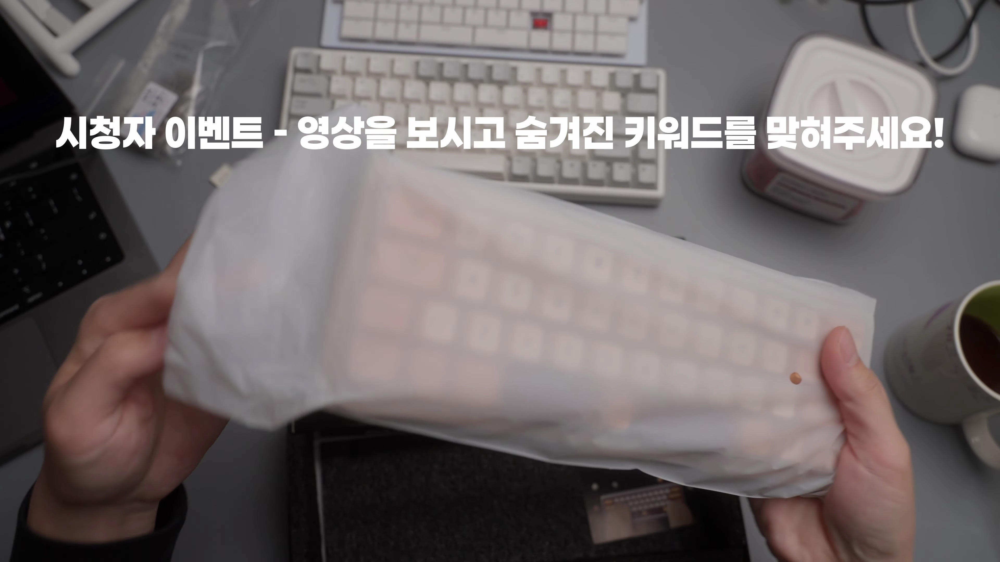
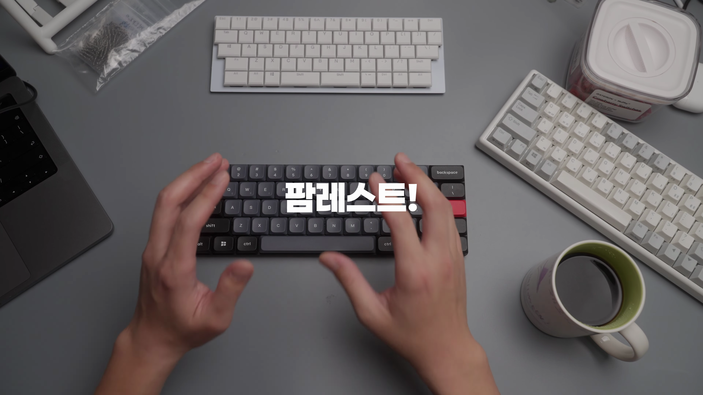
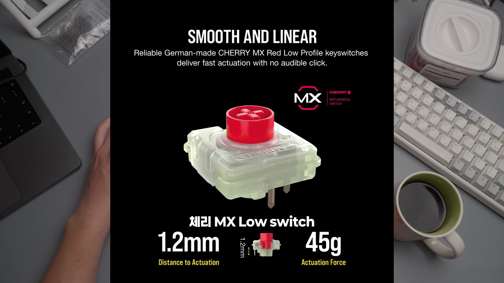
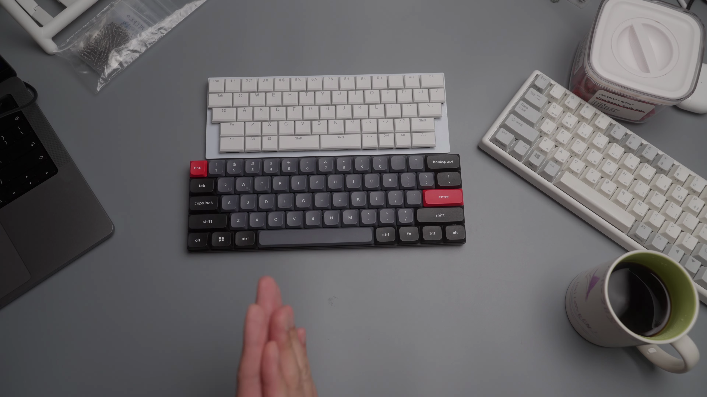
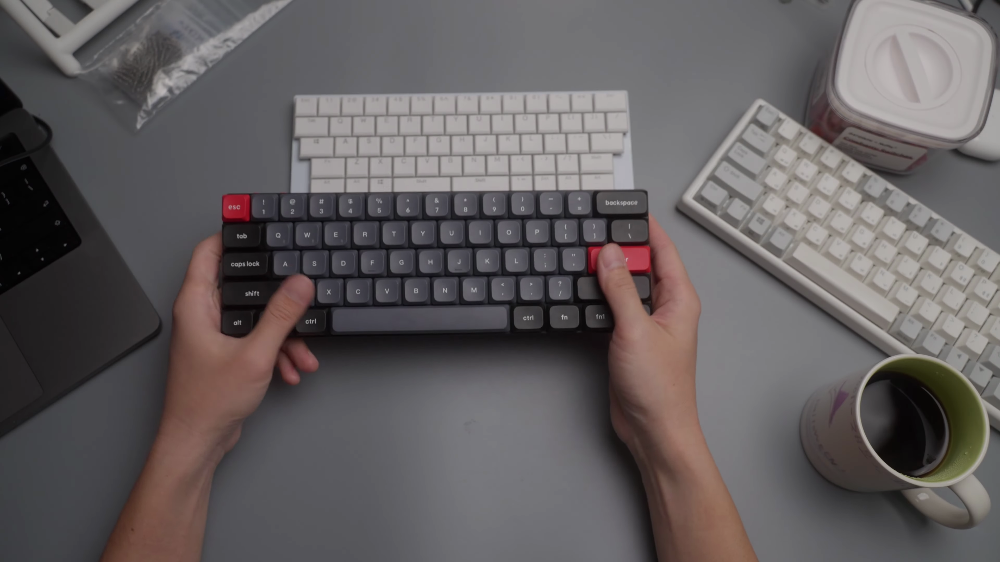
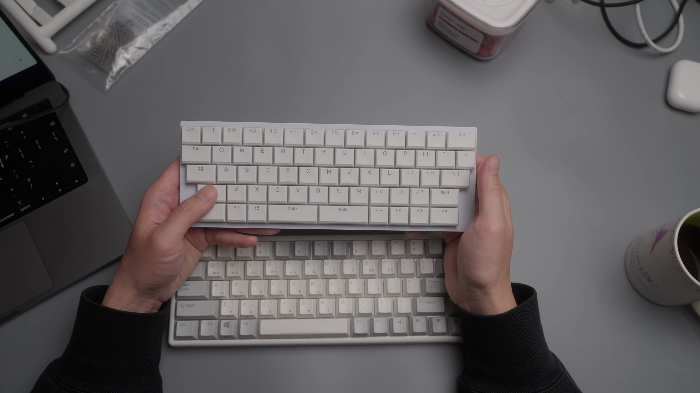

이 블로그 포스팅에서는 로우 프로파일 키보드의 특징과 사용자의 실제 경험을 바탕으로 키보드를 선택하는 데 있어 유용한 정보를 제공하고자 합니다. 사용자가 직접 사용해본 경험을 통해 제품의 특성과 장단점을 세세하게 다루어 보겠습니다.

이벤트 소식과 제품 소개
키보드에 대해 이야기하기에 앞서, 이번 영상에서는 이벤트가 진행 중임을 알리며, 구매했던 키보드에 대한レビュー를 시작합니다.
- 이벤트 진행 중
- 구매한 키보드에 대한 이야기 시작
구입한 키보드의 특징
현재 사용하고 있는 키보드는 풀 알루미늄으로 제작되어 있으며, 샴페인 골드 색상을 가진 몬스타 기어의 위켓 4 모델입니다. 이 키보드는 아름다운 키 소음이 매력적입니다.
- 풀 알루미늄 키보드
- 샴페인 골드 색상
키보드 사용의 어려움
작업을 할 때, 무거운 알루미늄 키보드는 불편함을 주는 요소로 작용했습니다. 키보드를 옮기다 보면 작업이 힘들어졌기 때문입니다.
- 무거운 알루미늄 키보드
- 작업 장소에서의 불편함
프로파일 스위치의 등장
2018년, 새로운 프로파일 스위치가 등장하면서, 적절한 60% 키보드를 기다려왔습니다. 하지만 원하는 제품이 나오지 않아 직접 키보드를 만들기까지 하였습니다.
- 2018년 출시
- 60% 키보드의 필요성
블루투스와 QMK 지원
새로운 키보드는 블루투스와 유선 모두 지원하며, 윈도우 모드 및 맥 모드로 전환 가능합니다. QMK 기능도 지원하여 더 많은 활용이 가능합니다.
- 무선 및 유선 지원
- 윈도우 및 맥 모드 전환 가능
키보드의 스태거링 문제
이 키보드는 스태거링이 불규칙하게 디자인되어 있어, 사용자에게 다소 불편함을 줄 수 있습니다. 일반 기준에 비해 스태거링이 어긋나 있어 이질감을 느끼기도 했습니다.
- 스태거링이 어긋남
- 사용 시 불편함

결정적인 이유와 개인적인 선호
고른 이유는 로우 프로파일, 무선, 60% 키보드와 자유로운 키맵핑이 가능하기 때문입니다.
- 60% 사이즈
- 자유로운 키맵핑 가능
결론 및 구매 의사
이 키보드는 무선 로우 프로파일 키보드 중에서 가장 가격이 저렴하면서도 유용한 옵션으로, 후회 없는 선택이었습니다.
- 추천할 만한 제품
- 무선 로우 프로파일 키보드Tags: #로우 프로파일 키보드 #키맵핑 #무선 키보드 #60% 키보드 #QMK 지원 #블루투스 키보드 #타건감